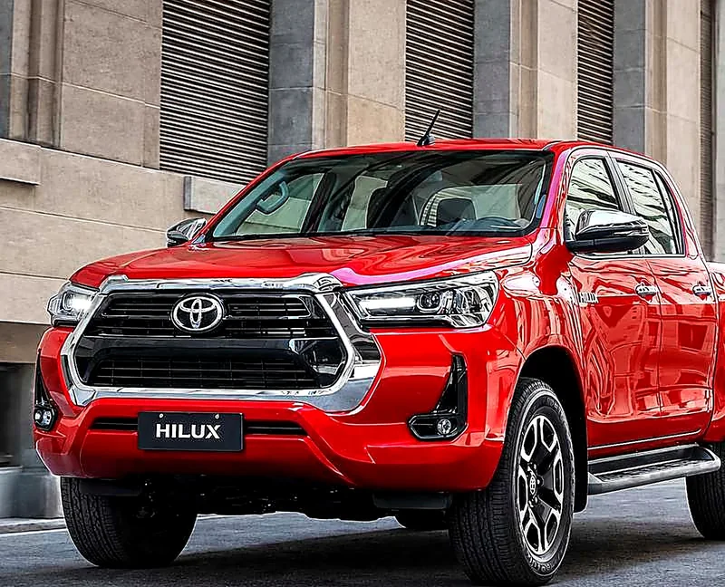

Trabajo de campo y obra
Uso intensivo diario, carga frecuente y caminos de tierra. Prioriza mecánica simple y bajo costo de mantenimiento sobre el confort.
Sugerida: DXLa pick-up más vendida de Argentina durante 20 años consecutivos (2006–2025, según Toyota Argentina). Cabina simple, chasis o doble, en combinaciones 4x2 y 4x4, manual o automática, con hasta 5 niveles de equipamiento y una variante deportiva. Ficha técnica elaborada a partir de fuentes oficiales de Toyota Argentina y cobertura especializada, citadas al pie.
Datos técnicos verificados: radio mínimo de giro oficial de 6,7 m (diámetro aproximado: 13,4 m); ancho de referencia de 2.020 mm; trocha GR-Sport +140/+155; PBT 3.090 kg en 4x4 y 3.140 kg en GR-Sport; neumático GR-Sport 265/65 R17 AT.

Toyota Argentina anunció a sus concesionarios el cronograma de una renovación de la Hilux fabricada en Zárate, con lanzamiento comercial estimado entre noviembre y diciembre de 2026 y despliegue de nuevas versiones hasta mediados de 2027 (incluida una futura variante GR-Sport de nueva generación y, más adelante, una versión con sistema micro-híbrido de 48V). Todo lo que describe esta página —motor, versiones, equipamiento— corresponde a la generación que se vende hoy en los concesionarios. Te avisamos con anticipación para que puedas decidir con esa información. Fuente: cobertura especializada de Autoblog Argentina y Parabrisas, citada al pie.
Cuatro formas típicas de usar una Hilux en Concepción del Uruguay y la zona, y qué versión suele acompañar cada una.
Uso intensivo diario, carga frecuente y caminos de tierra. Prioriza mecánica simple y bajo costo de mantenimiento sobre el confort.
Sugerida: DXEmpresas y monotributistas que alternan ruta y ciudad. Suma llantas de aleación y cámara de retroceso sin resignar robustez.
Sugerida: SRUso particular con viajes frecuentes. El salto al motor 2.8, el climatizador y la conectividad completa hacen a la diferencia diaria; la SRV+ suma acceso sin llave y tapizado de cuero sobre la SRV convencional.
Sugerida: SRV / SRV+ / SRXSalidas 4x4 exigentes fuera del asfalto. La GR-Sport suma ejes ensanchados, suspensión específica y el motor 2.8 potenciado a 224 CV, la mayor potencia publicada de la gama.
Sugerida: GR-SportEs una guía orientativa a partir de la configuración habitual de cada versión, no una recomendación cerrada: el equipo comercial confirma cuál te conviene según tu uso real y el stock disponible.
¿Cómo se posiciona frente a otras pick-ups medianas del segmento (Ranger, S10, Amarok, Frontier)? Según Toyota Argentina, la Hilux fue la pick-up más vendida del mercado argentino durante 20 años consecutivos (2006–2025), con una red de service y repuestos particularmente extendida en el interior del país. No publicamos aquí una comparativa spec-a-spec contra otras marcas por rigurosidad: cada fabricante actualiza sus fichas con calendarios distintos y una tabla desactualizada confunde más de lo que ayuda. Si estás dudando entre modelos, contanos cuáles y te armamos la comparación con datos vigentes de cada uno.
Cuatro preguntas para llegar a una versión sugerida a partir de la misma lógica de la sección anterior. Es orientativo: no reemplaza la charla con el equipo comercial ni la disponibilidad real de stock.
De la versión de trabajo a la deportiva, según la configuración publicada más reciente.
Nombres, combinaciones de motor/transmisión y disponibilidad de cada versión varían por año modelo y configuración vigente; se confirman con el concesionario antes de la compra. La gama completa incluye además configuraciones de Cabina Simple y Cabina Chasis, no cubiertas en esta comparativa centrada en Doble Cabina.
| Atributo | DXAcceso | SRMixto/flota | SRVFamiliar | SRV+Familiar plus | SRXTope de gama | GR-SportDeportiva |
|---|---|---|---|---|---|---|
| Motor y transmisión | ||||||
| Motor | 2.4 TD (2GD) | 2.4 (4x2) o 2.8 TD (4x4) | 2.8 TD (1GD) | 2.8 TD (1GD) | 2.8 TD (1GD) | 2.8 TD (1GD) |
| Potencia | 150 CV | 150 o 204 CV | 204 CV | 204 CV | 204 CV | 224 CV |
| Torque | 400 Nm | 400 Nm (2.4) o 420/500 Nm (2.8) | 500 Nm | 500 Nm | 500 Nm | 550 Nm |
| Transmisión | Manual 6ª; automática 6ª en D. Cabina | Manual o automática 6ª | Automática 6ª (fichas vigentes) | Automática 6ª (única opción) | Automática 6ª (única opción) | Automática 6ª (única opción) |
| Tracción | 4x2 / 4x4 | 4x2 / 4x4 | 4x2 / 4x4 | 4x4 | 4x2 / 4x4 | 4x4 |
| Ejes ensanchados | — | — | — | — | +140/+155 mm | +140/+155 mm |
| Equipamiento y confort | ||||||
| Llantas de aleación | — | 17″ | 17″ (4x2) / 18″ (4x4) | 18″ | 18″ | 17″ específicas GR-Sport |
| Cámara de retroceso | — | Sí | Sí | Sí | Sí | Sí |
| Faros | Halógenos | Halógenos | Bi-LED | Bi-LED | Bi-LED | LED oscurecidos |
| Sensores de estacionamiento (del. y tras.) | A confirmar | A confirmar | Sí | Sí | Sí | A confirmar |
| Acceso y arranque sin llave | — | — | — | Sí | Sí | Sí |
| Climatizador | — | — | Sí | Sí | Sí | Sí |
| Tapizado de cuero | — | — | — | Sí | Sí, ventilado | Cuero y suede GR |
| Audio JBL con subwoofer | — | — | 6 parlantes | 6 parlantes | 8 parlantes | Sí |
| Cámara de visión 360° | — | — | — | — | Sí | Sí |
| Pantalla multimedia | 9″ táctil con Android Auto y Apple CarPlay inalámbricos, incorporada en toda la gama en la actualización de equipamiento más reciente. | |||||
| Seguridad | ||||||
| 7 airbags de serie | Sí | Sí | Sí | Sí | Sí | Sí |
| Toyota Safety Sense (ACC, PCS, LDA) | — | — | — | — | Sí (solo 4x4) | Sí |
| Uso | ||||||
| Perfil de uso | Trabajo intensivo | Flota / mixto | Familiar | Familiar plus | Familiar premium | Off-road deportivo |
Cómo leer la tabla: «—» significa que esa versión no incluye el equipamiento según las fuentes citadas. «A confirmar» es un dato que el concesionario verifica por unidad.
Datos de motor, transmisión y equipamiento según la ficha oficial de Toyota Argentina, la cobertura del lanzamiento de la SRV+ (Autocosmos y Mercado Libre) y la nota técnica de la GR-Sport (Autocosmos), citadas al pie. “Según config.” y combinaciones dobles dependen del año modelo y el paquete de equipamiento elegido: se confirman con el concesionario. La SRV+ hereda de la SRV el audio JBL de 6 parlantes y los sensores de estacionamiento; “A confirmar” indica que la documentación consultada no permite afirmarlo ni negarlo.
Comparación visual de potencia y torque entre los dos motores turbodiésel de la gama.
Barras a escala relativa entre las tres cifras publicadas; no representan un porcentaje absoluto.
La caja automática libera más torque que la manual en el mismo motor 2.8, y la puesta a punto específica de la GR-Sport suma otro escalón sobre la automática estándar.
Motor, transmisión, seguridad y garantía según la ficha oficial consultada.
Los datos de esta ficha corresponden a la generación de Hilux que se vende hoy en Argentina (previa al rediseño anunciado por Toyota para fin de 2026) y provienen de la página oficial de Toyota Argentina, de la cobertura del lanzamiento de esta generación y de fuentes periodísticas y de mercado citadas al pie. Donde ninguna fuente pública consultada publica una cifra exacta, se indica “Consultar disponibilidad y configuración vigente” en lugar de estimarla. Los valores de dimensiones y capacidades corresponden a la configuración Doble Cabina y pueden variar levemente en Cabina Simple o Chasis. Precio, stock y versiones disponibles se confirman con el equipo comercial.
¿La estás pensando contra otro modelo de la gama? Comparala con especificaciones lado a lado.
Ir al comparador ↗Peso en orden de marcha, peso bruto total (PBT) y carga útil aproximada, con la fuente y el grado de certeza de cada cifra.
Radio de giro: 6,7 m de radio mínimo oficial (diámetro aproximado: 13,4 m).
| Configuración | Peso en orden de marcha | PBT | Carga útil aprox. (estimación) | Fuente |
|---|---|---|---|---|
| Doble Cabina 4x2 | No consolidado por versión | 2.810 kg | No estimada | PBT: ficha oficial SRV/SRX |
| Doble Cabina 4x4 | 2.025–2.085 kg (rango de referencia de Doble Cabina) | 3.090 kg | ≈ 1.005–1.065 kg | PBT: ficha oficial; peso: ficha pública de referencia |
| GR-Sport 4x4 | 2.125–2.135 kg | 3.140 kg | ≈ 1.005–1.015 kg | Ficha oficial GR-Sport |
| Cabina Simple / Cabina Chasis | 1.600–1.655 kg / 1.890–1.940 kg | A confirmar | No estimada | Ficha pública de referencia |
Carga útil aproximada = PBT menos peso en orden de marcha. Es una estimación de esta ficha, no una cifra oficial de Toyota: la carga útil homologada de cada unidad figura en su documentación. Donde falta alguno de los dos datos no se calcula.
Cobertura oficial de fábrica y extensión “Toyota 10”, según los términos publicados por Toyota Argentina.
Toyota Argentina informa una garantía oficial de 5 años sobre unidades 0 km, con mantenimiento realizado en la red oficial. Los términos y condiciones completos están publicados por la marca.
Cumplidos los 5 años de garantía oficial, y con el service hecho en la red oficial, se puede extender la cobertura sin costo por períodos de 1 año o 10.000 km, hasta un máximo de 10 años o 200.000 km.
Aplica a unidades 0 km y a Hilux patentadas desde 2020. Es transferible si la unidad se vende con el historial de service al día, lo que también suma valor de reventa.
Fuente: comunicado oficial “Toyota 10” y términos y condiciones de garantía de Toyota Argentina, citados en Fuentes consultadas. Confirmá el detalle exacto de tu unidad con el equipo comercial antes de la compra.
Esquema orientativo de perfil y de la caja de carga, con las medidas publicadas para la configuración Doble Cabina.
Esquema simplificado de referencia, no a escala exacta. Medidas de la ficha oficial SRV/SRX; la GR-Sport publica 2.020 mm de ancho, 1.830 mm de alto y 247 mm de despeje.
Ángulos de trabajo y despeje publicados oficialmente para la Hilux GR-Sport, la única versión de la gama con esta información publicada por Toyota Argentina.
Esquema simplificado de referencia, no a escala exacta.
Toyota Argentina no publica ángulo de ataque, salida, ventral ni profundidad de vadeo para DX, SR, SRV, SRV+ o SRX en su ficha técnica pública; por eso no figuran en esta sección. Si necesitás esos datos para una versión específica, te los confirmamos con el equipo comercial. Fuente: ficha técnica oficial de Hilux GR-Sport (Toyota Argentina, PDF de prensa) y cobertura de lanzamiento de la generación IV, citadas en Fuentes consultadas.
Paleta oficial de la Hilux en Argentina, según el lanzamiento de esta generación y la cobertura del lanzamiento de la SRV+ (2025).
La paleta de la GR-Sport surge de las imágenes del configurador de un concesionario oficial: confirmala con el concesionario antes de elegir color.
Tonalidades de referencia, no coinciden exactamente con la pintura real ni sustituyen el código de fábrica. El Blanco Perlado (070) no existe en la SRV 4x2. La GR-Sport tiene su propia paleta de 4 colores (ver abajo). La disponibilidad de cada color por versión y año modelo se confirma con el concesionario. Fuentes: cobertura del lanzamiento de esta generación (Autoblog Argentina, Agrofy News, 2020) y del lanzamiento de la SRV+ (Autocosmos, 2025), citadas al pie.
Toyota Argentina no publica una paleta de colores de interior independiente de la pintura exterior: el material y color del tapizado dependen de la versión, no de la elección de pintura. Tela en DX, SR y SRV; cuero desde SRV+ (mismo tono en toda la gama con este material); cuero ventilado en SRX; cuero y suede con detalles Gazoo Racing en GR-Sport. Ver el detalle completo en la sección Ficha técnica → Confort y tecnología.
Elegí versión y color para armar tu consulta con los datos ya cargados; el motor, la transmisión y los colores disponibles se ajustan solos según la versión y la tracción.
Referencia según la Comparativa completa de versiones. Los colores por versión surgen de imágenes del configurador de un concesionario y se confirman con el equipo comercial, igual que precio y disponibilidad.
Equipamiento adicional típico para Hilux que ofrecen los concesionarios oficiales Toyota. Disponibilidad y precio sujetos a confirmación.
Protege la caja de la intemperie y el robo, y mejora la aerodinámica en ruta.
Revestimiento antideslizante que evita golpes y rayaduras al cargar y descargar.
Suma estructura visual y funcional en la caja; de serie en la GR-Sport y disponible como accesorio en otras versiones.
Accesorio genuino Toyota disponible para DX/SR: permite una entrada de aire libre de polvo en cruces de agua o caminos muy polvorientos.
Facilitan el ascenso y protegen los laterales bajos de la carrocería.
Refuerzo frontal con óptica auxiliar opcional, pensado para rutas rurales.
Juego de alfombras de goma con diseño específico para el piso de la Hilux.
De serie en SRX y GR-Sport; disponible como accesorio para el resto de la gama.
Listado orientativo, combinando el catálogo de accesorios genuinos publicado en toyota.com.ar (donde figura, por ejemplo, el snorkel para Hilux DX/SR) y el material difundido por el concesionario en Instagram (@toyotacdelu). Confirmá stock, compatibilidad por versión y precio con el equipo comercial.
Service oficial, repuestos genuinos y cubiertas con la medida de fábrica de cada versión, en el mismo concesionario.
Los mantenimientos hechos en la red oficial son la condición para extender la garantía “Toyota 10”. Solicitar turno ↗
Filtros, frenos, amortiguadores y accesorios genuinos para Hilux. Disponibilidad a confirmar. Ver repuestos ↗
Consultá stock y precio de la medida que corresponde a tu versión (tabla debajo) y pedí montaje y balanceo. Ver neumáticos ↗
| Versión | Llanta | Medida habitual |
|---|---|---|
| DX | Chapa | A confirmar en la etiqueta de la puerta |
| SR | Aleación 17″ | 265/65 R17 |
| SRV 4x2 | Aleación 17″ | 265/65 R17 |
| SRV 4x4 | Aleación 18″ | 265/60 R18 |
| SRV+ y SRX | Aleación 18″ | 265/60 R18 |
| GR-Sport | Aleación 17″ GR | 265/65 R17 AT (ficha oficial GR-Sport) |
La medida exacta de cada unidad figura en la etiqueta del marco de la puerta del conductor: confirmala ahí antes de comprar cubiertas de reemplazo.
Consultar neumáticos por WhatsApp ↗Promociones, tasas y planes de ahorro cambian con frecuencia: se confirman con el equipo comercial antes de cualquier decisión.
Las consultas más habituales antes de elegir versión.
La DX es la versión de acceso, con motor 2.4 de 150 CV y equipamiento más austero, pensada para trabajo intensivo. La SR suma llantas de aleación de 17 pulgadas, paragolpes cromado y cámara de retroceso; en su variante 4x2 mantiene el motor 2.4, y en 4x4 pasa al 2.8 de 204 CV.
Sí. Desde fines de 2024, Toyota Argentina incorporó la caja automática de 6 velocidades a la DX Doble Cabina, tanto en 4x2 como en 4x4, siempre con el motor 2.4 de 150 CV y 400 Nm. La DX Cabina Simple se sigue ofreciendo solo con caja manual.
La SRV+, incorporada en 2025, se ubica entre ambas: sobre la SRV suma acceso y arranque sin llave, asiento del conductor con ajuste eléctrico y tapizados de cuero, y lleva llantas de 18 pulgadas (la SRV 4x4 también las trae). A diferencia de la SRX, no tiene las trochas ensanchadas ni el paquete Toyota Safety Sense, que se ve en la SRX 4x4 y en la GR-Sport.
Hasta 3.500 kg con freno y 750 kg sin freno en las versiones con ficha oficial consultada. La capacidad real depende de la versión, el equipamiento y el enganche instalado, y debe confirmarse antes de remolcar cargas pesadas.
El paquete Toyota Safety Sense (crucero adaptativo ACC, alerta de colisión con frenado autónomo PCS y aviso de cambio de carril LDA) figura en la SRX 4x4 y en la GR-Sport. Ni la SRV ni la SRV+ lo incluyen, y la ficha de feb-2025 no lo muestra en la SRX 4x2.
Una vez cumplidos los 5 años de garantía oficial, y siempre que el mantenimiento se haya hecho en la red oficial, se puede extender la cobertura sin costo por períodos de 1 año o 10.000 km hasta un máximo de 10 años o 200.000 km. Aplica a unidades 0 km y a Hilux patentadas desde 2020, y es transferible si la unidad se vende con el historial de service al día.
La Cabina Simple prioriza superficie de carga para trabajo; la Cabina Chasis permite montar equipamiento especial (como caja o balancín); la Cabina Doble suma capacidad para hasta 5 ocupantes con caja algo más reducida. Las dimensiones y capacidades de esta ficha corresponden a la Doble Cabina.
Depende del uso: la generación actual tiene más de cinco años en el mercado argentino, mecánica y repuestos ampliamente probados, y sigue siendo líder de ventas del segmento. El rediseño anunciado llega recién entre noviembre y diciembre de 2026, con despliegue escalonado de versiones hasta mediados de 2027, así que la unidad 0 km que se entrega hoy seguirá siendo la generación vigente por un buen tiempo más. Es una decisión que conviene charlar con el equipo comercial según tu plazo de cambio habitual.
El radio mínimo de giro oficial es de 6,7 metros, según la ficha de Toyota Argentina. Eso equivale a un diámetro de giro de unos 13,4 metros.
Toyota publica el peso bruto total (2.810 kg en 4x2, 3.090 kg en 4x4 y 3.140 kg en la GR-Sport) pero no una carga útil por versión. Restando el peso en orden de marcha, la estimación ronda 1.005–1.065 kg en Doble Cabina 4x4 y 1.005–1.015 kg en la GR-Sport. Es un cálculo aproximado: la cifra homologada figura en la documentación de cada unidad.
Las versiones con llanta de 17 pulgadas usan 265/65 R17 (la GR-Sport, en versión AT) y las de 18 pulgadas usan 265/60 R18. La SRV lleva llantas de 17 pulgadas en 4x2 y de 18 en 4x4. Confirmá la medida exacta en la etiqueta del marco de la puerta del conductor.
Las fichas oficiales vigentes de la SRV listan solamente la caja automática de 6 velocidades. La manual de 6 velocidades se ofrece en la DX y la SR. Confirmá con el concesionario si hay unidades manuales en stock.
La ficha oficial de febrero de 2025 muestra el paquete (ACC, PCS y LDA) en la SRX 4x4 y en la GR-Sport, no en la SRX 4x2. Si es un requisito para vos, pedile al concesionario que lo confirme por unidad.
Según el configurador de un concesionario oficial, la GR-Sport se ofrece en cuatro colores: Negro Mica, Gris Oscuro Metalizado, Rojo bitono y Blanco Perlado con techo negro. Confirmalo con el concesionario antes de decidir.
La siguiente matriz separa los datos publicados oficialmente para Argentina de los campos que Toyota no consolida por versión en la documentación consultada.
| Versión | Datos confirmados | Campos que requieren confirmación por unidad | Fuente |
|---|---|---|---|
| DX | Nombre de versión dentro de la gama Hilux argentina. | Motor, caja, tracción, ruedas, ADAS y equipamiento exacto por carrocería. | Catálogo/modelos Toyota Argentina |
| SR | Nombre de versión dentro de la gama Hilux argentina. | Motor, caja, tracción, ruedas, seguridad y equipamiento exacto por configuración. | Catálogo/modelos Toyota Argentina |
| SRV | Motor 1GD 2.8 l, 204 CV, 500 Nm; 4x2/4x4; caja 6 A/T (única en las fichas vigentes); Bi-LED; JBL de 6 parlantes + subwoofer; sensores delanteros y traseros; llantas de 17″ (4x2) y 18″ (4x4). | Disponibilidad exacta, combinación de carrocería y medidas de neumático por unidad. | Ficha oficial SRV/SRX |
| SRV+ | Motor 1GD 2.8 l, 204 CV, 500 Nm; caja 6 A/T; equipamiento diferencial publicado para esta configuración. | Disponibilidad vigente, tracción según unidad y ausencia/presencia de ADAS no documentada aquí. | Ficha oficial SRV/SRX |
| SRX | Motor 1GD 2.8 l, 204 CV, 500 Nm; caja 6 A/T; 4x2/4x4/reducida; Toyota Safety Sense (ACC, PCS, LDA) en 4x4, no en 4x2; 7 airbags; JBL 8 parlantes + subwoofer; visión 360°; ventilación de butacas; Bi-LED. | Códigos de color y disponibilidad comercial por unidad. | Ficha oficial SRV/SRX |
| GR-Sport | Caja automática 6 velocidades con levas; 4x4/reducida; ancho 2.020 mm; alto 1.830 mm; despeje 247 mm; neumático 265/65 R17 AT; trocha +140/+155 mm; peso en orden de marcha 2.125–2.135 kg; PBT 3.140 kg; Toyota Safety Sense. | Potencia y torque (fuente complementaria: Autocosmos), sensores de estacionamiento y colores (configurador de concesionario). | Ficha oficial GR-Sport |
data/models.json.Fichas de Toyota Argentina para contrastar cada dato. Si un PDF vigente difiere de esta página, prevalece el PDF.
Así podés verificar cada dato por tu cuenta. Organizadas por origen: primero las oficiales de Toyota Argentina, después cobertura especializada y de mercado.
Esta ficha combina fuentes oficiales con cobertura periodística y de mercado porque Toyota Argentina no publica una única ficha técnica consolidada con todas las versiones, motorizaciones y equipamiento al mismo tiempo. Ante cualquier discrepancia entre fuentes, se priorizó la información más reciente y la de origen oficial. Se recomienda siempre confirmar specs, colores y disponibilidad exactos con el concesionario antes de una compra.
Contanos qué versión buscás y te confirmamos disponibilidad.
Hablar con un asesor por WhatsApp ↗